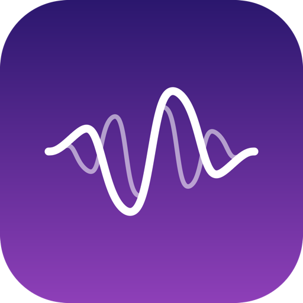
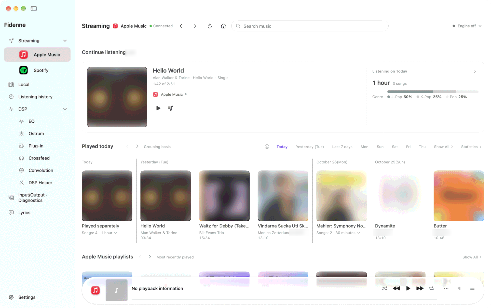
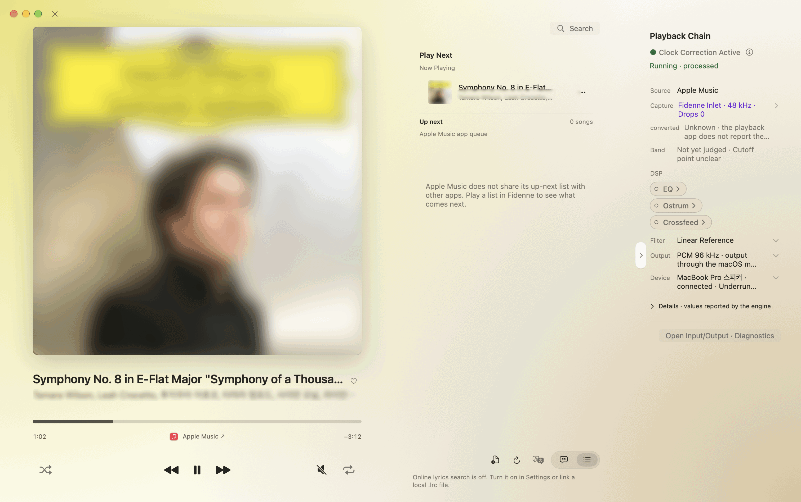
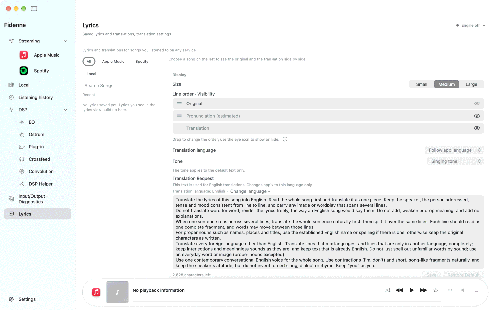
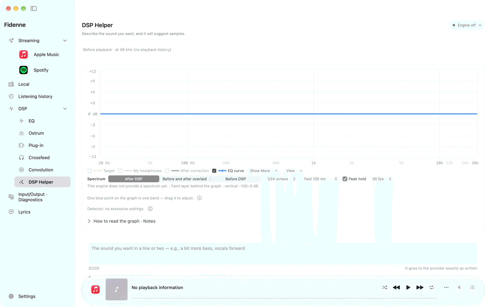
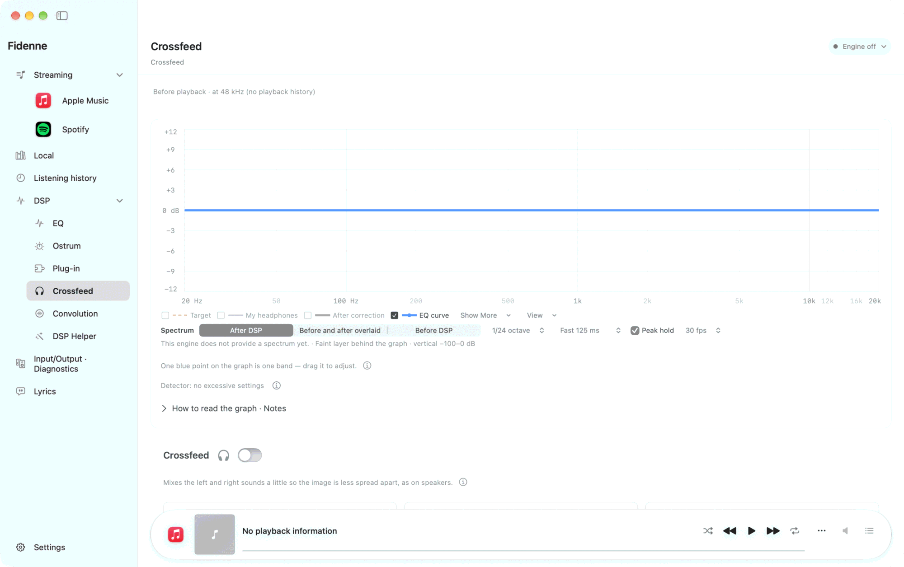
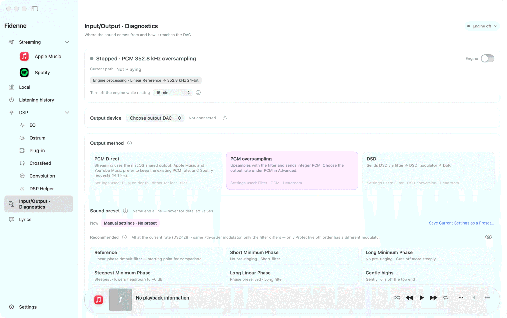
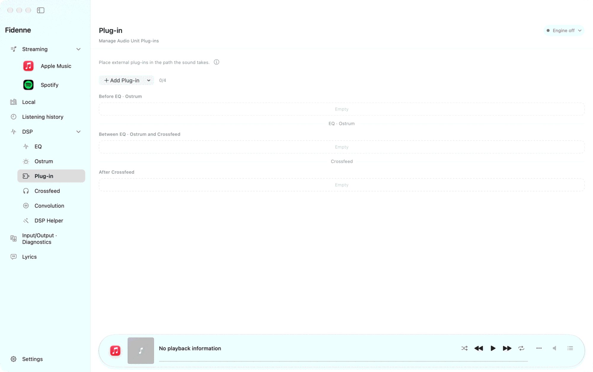
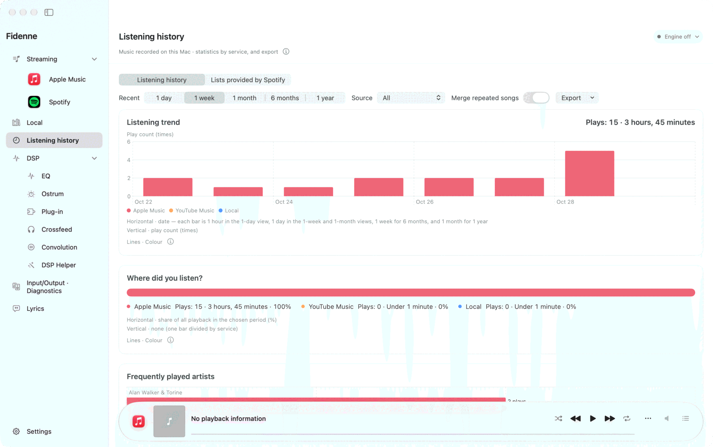
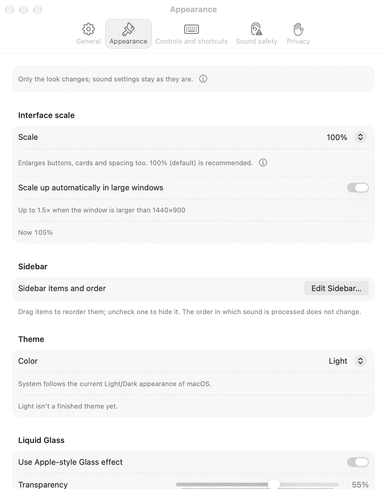

Three languages. Light and dark.
Use Korean, English or Japanese, in light or dark appearance. The app follows the per-app language in macOS. Track and album names keep the wording supplied by each service.

FidenneFidenne · Public beta 1 · 0.7.0
Keep your player. Shape its audio with EQ, Ostrum and Crossfeed, then send it to your external DAC. See your music, lyrics and audio path in one window.
View releasesApple silicon Mac · macOS 15 or later · Wired USB DAC recommended
This is still a public beta, so some things will change or be fixed. Check the release page for downloads and release availability.

0.7
Clearer screens, translation you can shape, and sound settings you choose.
Use Korean, English or Japanese, in light or dark appearance. The app follows the per-app language in macOS. Track and album names keep the wording supplied by each service.
Choose the order and visibility of original lyrics, pronunciation and translation, and edit pronunciation lines. Edit the translation style for each target language or restore its defaults.
Ask the DSP helper for three setting samples. Leave a comment on each sample to request another set, and apply only the settings you choose.
Add Audio Unit effects to your audio path and reorder them. Open a plug-in's own screen with Open Editor on its card. Check enabled effects and processing order in Playback Chain.
Turn down your DAC or amplifier before the first playback.
Use an Apple silicon Mac (M1 or later) with macOS 15 or later. An external USB DAC is recommended; DSD output needs a DAC that accepts the selected DSD rate. Fidenne also processes sound for built-in speakers, AirPods and HDMI and sends it as PCM, which macOS mixes on the way out.
Download the .dmg from the release page, open it, and drag Fidenne to Applications. Open the app from Applications.
In first-run setup, choose your output DAC. For input, choose Fidenne Inlet or System Tap. Inlet needs a separate installation; System Tap needs no installation and captures at 48 kHz. macOS asks for permission when you first use the relevant feature.
Choose a track in your player. Check the output mode in Fidenne and follow the start prompt. Once you hear audio, raise the DAC or amplifier volume gradually.
Open recent listening and playlists from the music home, or play files from your local library. Each service does its own playback: Apple Music in the Music app on your Mac, Spotify in the Spotify app, and YouTube Music in a browser tab (Safari, Chrome or Edge). Connection steps and available controls vary by service.
See artwork, lyrics and Playback Chain together. The audio processing column shares the album view’s background, keeping the focus on lyrics and controls.

On the Lyrics page, attach LRC or TXT files, or consent to look up lyrics on LRCLIB. Choose the order and visibility of original lyrics, pronunciation and translation. Edited pronunciation appears in album view and other lyric views too; you can return to the estimated reading.
Choose an AI provider and model, then edit the style instructions for the target language. Restore defaults to return to that language’s starting style. The Choose the tone: Singing tone (default — one tone through the song, the way lyrics are sung) or Follow original tone (keeps whether the original is polite or casual). Korean translations leave English expressions as written. If an older request was moved, follow the in-app notice to review it. Changing settings does not automatically remake saved translations.

Choose a provider and model in the DSP helper and send your request. Review the changes in three samples—mild, medium and strong—and apply the one you choose. Add a comment to each sample to ask for a new set of three. Switching between samples the helper has applied does not require an unnecessary second press.
If you edit a value elsewhere after requesting samples, check the changed item and reason before applying a sample that affects it. You can undo an application. A headroom suggestion remains a separate choice; if you previously allowed automatic correction, it only lowers Preamp. The helper’s audition feature is unavailable in 0.7.

Choose Parametric, Minimum Phase FIR or Linear Phase FIR EQ. Use Ostrum for Bass Sound, Mid-Hi Tune and Width. Crossfeed controls how much the stereo channels mix; the related page in 0.7 is named Crossfeed.

In I/O & Diagnostics, choose between PCM Direct, processed PCM (44.1–768 kHz), and DSD conversion. Conversion methods such as Precision, Safe and Trellis depend on the selected output. CLANS is an experimental method for 44.1 kHz-family DSD128 and DSD256. Trellis is heavy: if this Mac cannot finish it in time, playback stops and a Choose conversion method button appears, recommending Precision, Safe or CLANS. Return to Precision if you encounter problems. The long-tap filters include Cardinal Sinc 128K and 64K (with Follow twins).

On the Plug-ins page, add compatible stereo Audio Unit effects installed on your Mac. Use each card to enable an effect, choose its position and order, or expand its editor. Editors open and close independently. Availability depends on the plug-in and output sample rate.

Use Listening History to revisit tracks and see listening time. Date ranges and durations follow your screen language. The scope of history and statistics varies by service.

In Settings, change appearance, interface size, controls and privacy choices. Choose Korean, English or Japanese through macOS per-app language settings. App instructions and durations follow that language; service track information stays as supplied.

If you hear no audio, check the input and output devices and output mode first. If the problem continues, export a support bundle in the app, review its contents, then send it to support by email. The app does not send it for you. When something sounds odd, press ⌥⌃⌘K (Help › Mark That Something Was Off) to mark that time in the diagnostic record so it is easy to find.